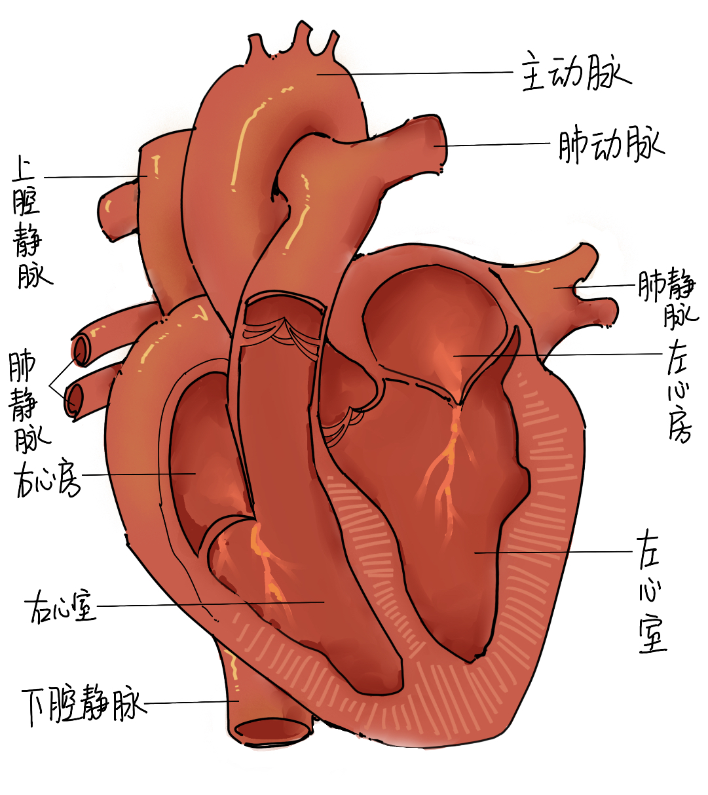

心脏是一个由肌肉组织组成的器官，是血液循环的动力器官。
心房、心室与血管的连接（必备必考）
瓣膜：分为房室瓣和动脉瓣，作用是防止血液倒流
心脏的工作过程
| 房室瓣 | 动脉瓣 | 血流方向 | |
| 左右心房收缩 | 开放 | 关闭 | 心房→心室 |
| 左右心室收缩 | 关闭 | 开放 | 心室→动脉 |
| 心房和心室均舒张 | 开放 | 关闭 | 静脉→心房 |
体循环与肺循环
体循环与肺循环是同时进行的。
路径
蓝色箭头为静脉血，红色箭头为动脉血
左心室→主动脉→各级动脉→全身毛细血管→各级静脉→上下腔静脉→右心房→右心室→肺动脉→肺泡外毛细血管（气体交换)→肺静脉→左心房→回到左心室，循环完成
注意：肺动脉里留的是静脉血，肺静脉里留的是动脉血
跳转到下一个文档-安全输血